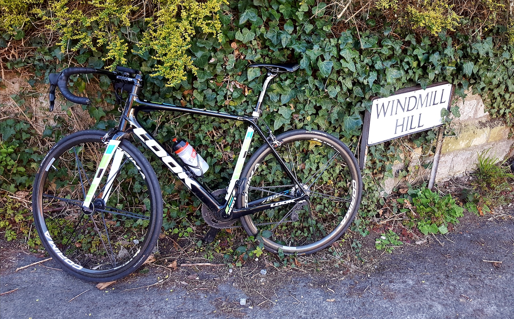

Welcome to this review site of Kent's cycling hills. I've been riding them for 15 years, and while I won't be bothering many Strava leaderboards I've grown to love and loathe a fair few of them. Hopefully this list will steer you towards some you haven't tried yet, or away from those that frankly aren't worth it!
Living in North West Kent this list is heavily skewed to that area, but I'm doing my best to get further East and South.
Locations: I've grouped hills by either (1) intersections with famous walking routes on the Kent Downs: Pilgrims Way, Greensand Way, North Downs Way, (2) the 'hub' town nearby or (3) nickname (Kent Alps). Use the menu at the top right of the page to access each group
Ratings: I've taken the approach from Simon Warren's excellent '100 climbs' series of ranking out of 10. A score of 1/10 does not mean 'easy', especially if you attack - I've been more exhausted going all out for a fast time on 'Dene Park' than grinding up Toys Hill five times. I've also tried to base the scores relative to the 100 Climbs ratings for Toys/Vigo/Yorks etc., so the highest score is 7/10.
Categories: You can find further groupings in the menu: 'Great Views', 'Unworthy Chevrons' (there's a chevron on the OS map, but the climb is not worth it), and 'Hardest climbs top 10'
Feedback:What have I missed or got wrong? please mail feedback@kenthills.bike . Guest reviews welcome!
Privacy notice:This site only has hills: it has no ads, no trackers, and no cookies. Cookies should only be used with an espresso to get you up a hill.